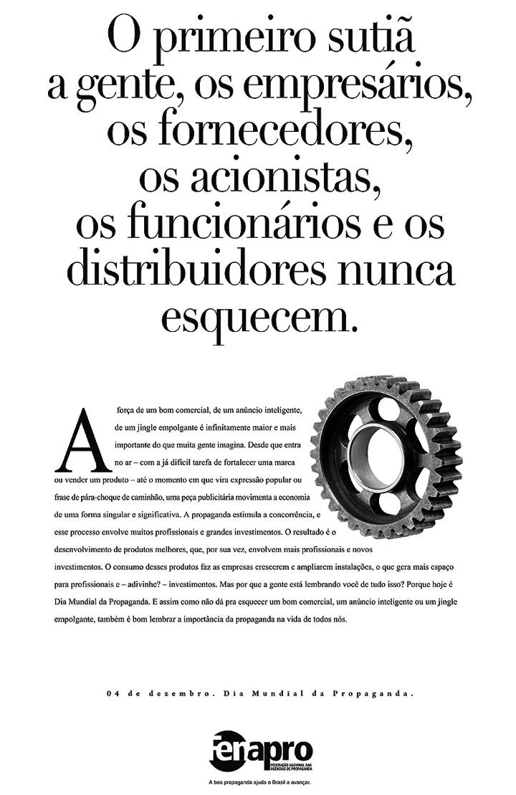

Alunos
Isadora Daiub
Izadora Moreira
Leticia Serem
Natasha Feliciano
Wylkon Cardoso


Isadora Daiub
Izadora Moreira
Leticia Serem
Natasha Feliciano
Wylkon Cardoso
A Castaldi & Benaton (João Castaldi & Jocelyn Benaton) - depois chamada A Eclética.
“Os jornais eram quase os mesmos de hoje, mas extremamente pobres em publicidade”.
- Júlio Cosi
Principais atividades e clientes:
A Eclética anunciava nos principais meios de comunicação da época (revistas, jornais, cartazes e mala-direta), tendo como principais clientes a Ford Motor Co., a Texaco Co., Kolynos, Colgate-Palmolive, Aveia Quaker, Sabonete Eucalol, Biscoitos Aymoré e entre outros.
Agências nesse momento:
A Eclética, A Pettinati, A Edanée, a de Valentim Haris e a de Pedro Didier e Antônio Vaudagnoti.
Nos anos 1920, elas experimentam um período de prosperidade, principalmente pelo avanço tecnológico e incrementos, como o outdoor, e pela chegada de empresas estrangeiras, que se tornaram clientes regulares.
1926 - A General Motors (GM) tinha um departamento de propaganda, que se dissolveu em 1929.
1929 - E isso marca a entrada das primeiras agências agências de propaganda americanas (Meccan Erickson, JWThompsom), instalaram filiais para atender a esse novo mercado, com isso, as atividades publicitárias passaram a receber forte influência da propaganda americana.
A J.W. Thompsom foi a primeira agência multinacional a chegar aqui.
Principais inovações:
- Primeiras duplas de criação
- Primeiros anúncios com fotografia
- Comerciais falados
- Patrocínio das primeiras transmissões esportivas
- Primeiros programas infantil de TV
- Dublagem de filmes estrangeiros
São criadas as datas promocionais, como Dia dos Pais, Dias das Mães, para aquecer o período mais fraco do comércio. Período de grande trabalho, e é quando as agências se sobrecarregam e passam a ter necessidade de trabalhar até tarde da noite. Daí nasce à necessidade de disciplinar a ética da propaganda.
1949 - Criação da Associação Brasileira de Agências de Propaganda (Abap).
1956 - Nasce a agência Alcântara Machado - atual Almap/BBDO)
1957 - Acontece no Rio de Janeiro o I Congresso Brasileiro de Propaganda, promovido pela ABAP, durante o qual é criado o Código de Ética dos Profissionais da Propaganda - além de recomendada a criação do Instituto Verificador de Circulação (IVC). E é criada no Rio Grande do Sul a MPM.
1961 - É criado o IVC (Instituto Verificador de Circulação)
1965 - As agências conseguem a Lei No. 4.680
1968 - Fundada a DPZ por três profissionais da área de criação
1972 - A Ogilvy & Mather compra a Standard
1974 - O grupo Young & Rubicam chega ao Brasil
1975
- A gaúcha MPM torna-se a maior agência do Brasil.
- Chega a Leo Burnett, comprando a Companhia de Incremento de Negócios (CIN).
- A BBDO associa-se à CBBA (posteriormente comprada pela J. W. Thompson).
1976 - O Grupo Interpublic - ao qual está incorporada a McCannErickson - adquire a Proeme.
1979 - Após procedimentos legais, foi firmado o protocolo de fundação da FENAPRO, em 13 de dezembro, composto dos sindicatos de São Paulo, Rio de Janeiro, Rio Grande do Sul, Distrito Federal, Minas Gerais e Goiânia.
Fundação da Comissão Nacional de Autorregulamentação Publicitária, a Conar, que promoveu as primeiras conciliações e julgamentos.
1987 - O Brasil tem mais de 2 mil agências de publicidade.
1990 - Lançamento do Código de Defesa do Consumidor.
Entre 1995 e 1996 - A J.Walter Thompson foi uma das primeiras agências – junto com a DM9 do PJ Pereira, aAlmap que tinha o René de Paula e DPTO do Fran Abreu – a se organizar para desenvolver projetos e campanhas para internet. Nessa mesma época, a Publicis, quando ainda era Norton associou-se a uma produtora web chamada InterNort.
1997 - a DDB compra a DM9.
Entre 1990 e 2000
- a DDB compra a DM9.
- F/Nazsca Saatchi&saatchi.
- Loweloducca.
- Carillo Pastore Euro RSCG.
Conar (Conselho de Autorregulamentação Publicitária)
- Conar é uma ONG encarregada de fazer valer o Código Brasileiro de Autorregulamentação Publicitária.
- Conar já instaurou mais de 7 mil processos éticos. Fundado em 1980, o Conar tem sede na cidade de São Paulo e atua em todo o território nacional.
- Conar atende a denúncias de consumidores, autoridades, dos seus associados ou ainda formuladas pela própria diretoria. O Conselho de Ética do Conar se reúne e a julga a denúncia e, se a mesma tiver procedência, o Conar recomenda aos veículos de comunicação a suspensão da exibição da peça ou sugere correções à propaganda. Pode ainda advertir anunciante e agência.
- Em seu site, a organização dispõe o código de regras da publicidade brasileira, criado pelo próprio conselho.
A Fenapro (Fundação da Federação Nacional das Agências de Propaganda)
Após procedimentos legais, foi firmado o protocolo de fundação da FENAPRO, em 13 de dezembro, composto dos sindicatos de São Paulo, Rio de Janeiro, Rio Grande do Sul, Distrito Federal, Minas Gerais e Goiânia.

ABAP (Associação Brasileira de Agências de Publicidade (Abap) )
- Fundada em 1º de agosto de 1949, a Abap é uma associação civil com sede e foro em São Paulo Capital. Atua em todo o território nacional e é a maior organização latino-americana em seu setor. As empresas associadas à Abap são responsáveis por 78% do investimento publicitário em mídia no Brasil.
- A Abap é responsável pela co-fundação da Conar, do Instituto Verificador de Comunicação, do Fórum Permanente da Indústria da Comunicação, entre outros órgãos relacionados à comunicação.
- A lei 4680/65, conhecida como a Lei da Propaganda foi inspirada pela Abap, que também foi responsável pela realização de quatro Congressos Brasileiros de Publicidade e do 5º Congresso da Indústria da Comunicação.
- A Associação é ainda associada de duas importantes entidades: Associação Americana de Agências de Publicidade (AAAA) e Associação Europeia de Agências de Comunicação (Eaca).
- A ABAP se estrutura em três níveis:
a) Nacional: nesse nível, ela atua na forma de órgãos de competência Nacional;
b) Estadual: nesse nível, está sob a forma de Estaduais, de competência local;
c) Regional: aqui, ela atua apenas em cidades sedes de regiões administrativas.
Em São Paulo a Young & Rubicam continua a liderar o ranking, pelo 13º ano consecutivo, das maiores agências de publicidade brasileiras, segundo estudo do Kantar Ibope Media, divulgado em 24 de fevereiro de 2016.
O slogan da empresa farmacêutica alemã Bayer - "Se é Bayer é bom" - foi utilizado mundialmente e criado no Brasil.
A Agência JWThompson, foi a primeira a contratar uma diretora de criação mulher, em 1911.
http://www.antigomodelismo.com.br/galeria/propagandas-01/ http://www.antigomodelismo.com.br/galeria/propagandas-02/ http://www.abapnacional.com.br/pdfs/publicacoes/brasil.pdf http://www.meioemensagem.com.br/home/comunicacao/2014/11/26/primeira-agencia-completa-cem-anos.html http://propmark.com.br/agencias/j-walter-thompson-chega-aos-150-anos-de-atividade http://www.portaleducacao.com.br/marketing/artigos/47431/as-10-maiores-agencias-de-publicidade-do-brasil https://periodicos.ufsc.br/index.php/revistacfh/article/viewFile/15627/14159 https://www.acontecendoaqui.com.br/historia-da-propaganda http://www.carosouvintes.org.br/blog/wp-content/uploads/Prat_Propaganda-Apostila05_-_Breve_Historico_Propaganda.pdf http://www.slideshare.net/luciana/histria-da-publicidade-no-brasil http://www.portcom.intercom.org.br/pdfs/82007067232548735084643106769779388179.pdf http://lounge.obviousmag.org/anna_anjos/2012/11/publicidades-antigas-do-brasil.html